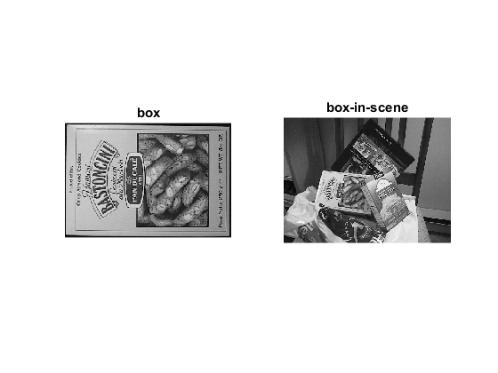
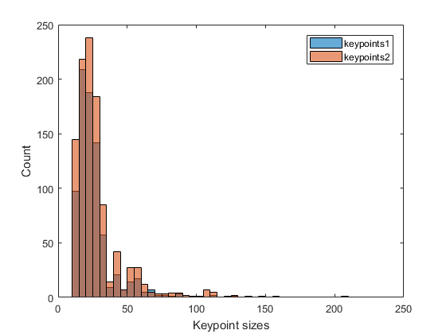
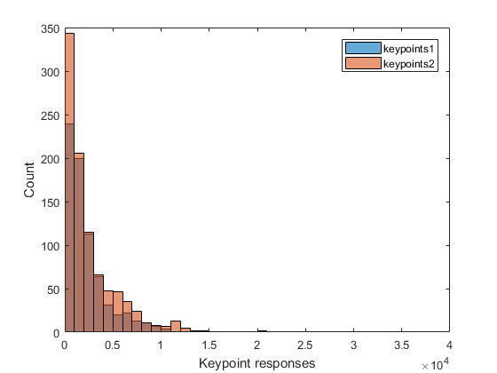
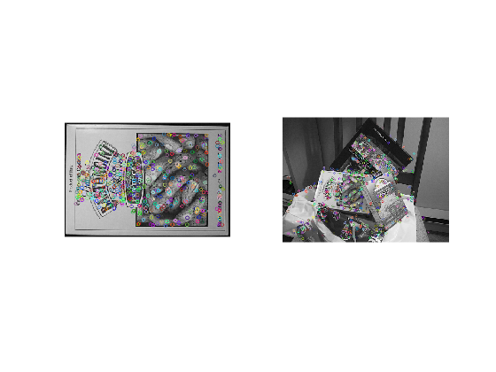
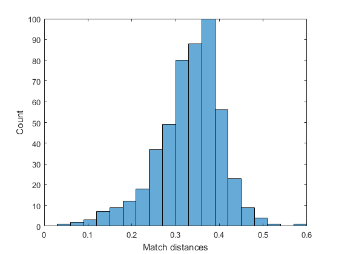
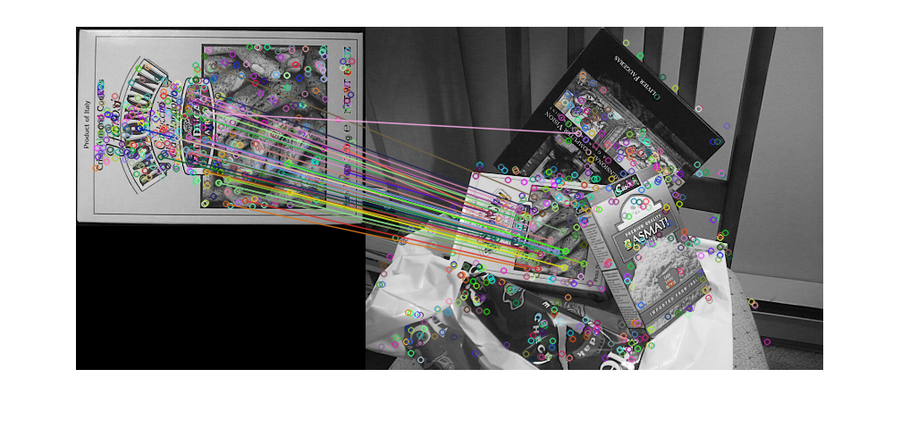

Feature Matching
SURF detector + descriptor + BruteForce/FLANN Matcher + drawing matches with OpenCV functions
In this sample you will learn how to use the cv.DescriptorExtractor interface in order to find the feature vector correspondent to the keypoints. Specifically:
- Use cv.SURF and its function cv.SURF.compute to perform the required calculations.
- Use either the BFMatcher to match the features vector, or the FlannBasedMatcher in order to perform a quick and efficient matching by using the Clustering and Search in Multi-Dimensional Spaces FLANN module.
- Use the function cv.drawMatches to draw the detected matches.
Sources:
Contents
Brute-Force Matcher
Brute-Force matcher is simple. It takes the descriptor of one feature in first set and is matched with all other features in second set using some distance calculation. And the closest one is returned.
For BF matcher, first we have to create the cv.DescriptorMatcher object with BFMatcher as type. It takes two optional params. First one is NormType. It specifies the distance measurement to be used. By default, it is L2. It is good for SIFT, SURF, etc. (L1 is also there). For binary string-based descriptors like ORB, BRIEF, BRISK, etc., Hamming should be used, which uses Hamming distance as measurement. If ORB is using WTA_K of 3 or 4, Hamming2 should be used.
Second param is boolean variable, CrossCheck which is false by default. If it is true, Matcher returns only those matches with value (i,j) such that i-th descriptor in set A has j-th descriptor in set B as the best match and vice-versa. That is, the two features in both sets should match each other. It provides consistant result, and is a good alternative to ratio test proposed by D.Lowe in SIFT paper.
Once it is created, two important methods are cv.DescriptorMatcher.match and cv.DescriptorMatcher.knnMatch. First one returns the best match. Second method returns k best matches where k is specified by the user. It may be useful when we need to do additional work on that.
Like we used cv.drawKeypoints to draw keypoints, cv.drawMatches helps us to draw the matches. It stacks two images horizontally and draw lines from first image to second image showing best matches.
FLANN based Matcher
FLANN stands for Fast Library for Approximate Nearest Neighbors. It contains a collection of algorithms optimized for fast nearest neighbor search in large datasets and for high dimensional features. It works faster than BFMatcher for large datasets. We will see the second example with FLANN based matcher.
For FlannBasedMatcher, it accepts two sets of options which specifies the algorithm to be used, its related parameters etc. First one is Index. For various algorithms, the information to be passed is explained in FLANN docs. As a summary, for algorithms like SIFT, SURF etc. you can create the matcher as follows:
matcher = cv.DescriptorMatcher('FlannBasedMatcher', ... 'Index',{'KDTree', 'Trees',5})
While using ORB, you can pass the following. The commented values are recommended as per the docs, but it didn't provide required results in some cases. Other values worked fine:
%{'LSH', 'TableNumber',12, 'KeySize',20, 'MultiProbeLevel',2} matcher = cv.DescriptorMatcher('FlannBasedMatcher', ... 'Index',{'LSH', 'TableNumber',6, 'KeySize',12, 'MultiProbeLevel',1})
Second option is Search. It specifies the number of times the trees in the index should be recursively traversed. Higher values gives better precision, but also takes more time. If you want to change the value, pass:
matcher = cv.DescriptorMatcher('FlannBasedMatcher', 'Search',{'Checks',10})
Options
some parameters
do_filtering = true; minHessian = 400;
Images
Prepare a pair of images
im1 = imread(fullfile(mexopencv.root(),'test','box.png')); im2 = imread(fullfile(mexopencv.root(),'test','box_in_scene.png')); subplot(121), imshow(im1), title('box') subplot(122), imshow(im2), title('box-in-scene')
Detect
Detect keypoints using SURF Detector
detector = cv.FeatureDetector('SURF', 'HessianThreshold',minHessian); keypoints1 = detector.detect(im1); keypoints2 = detector.detect(im2); whos keypoints1 keypoints2 disp(keypoints1(1))
Name Size Bytes Class Attributes
keypoints1 1x786 572592 struct
keypoints2 1x1040 757504 struct
pt: [68.9577 79.3293]
size: 20
angle: 104.5331
response: 1.5550e+04
octave: 0
class_id: -1
specify a mask where to look for keypoints
if false mask = false(size(im2)); mask(100:350,100:350) = true; keypoints2 = detector.detect(im2, 'Mask',mask); end
Show distribution of keypoint sizes
if ~mexopencv.isOctave() %HACK: HISTOGRAM not implemented in Octave figure histogram([keypoints1.size]), hold on histogram([keypoints2.size]) xlabel('Keypoint sizes'), ylabel('Count') legend('keypoints1', 'keypoints2') hold off end
Filter keypoints by size
if do_filtering keypoints1 = cv.KeyPointsFilter.runByKeypointSize(keypoints1, 0, 50); keypoints2 = cv.KeyPointsFilter.runByKeypointSize(keypoints2, 0, 50); end
Show distribution of keypoint responses
if ~mexopencv.isOctave() %HACK: HISTOGRAM not implemented in Octave histogram([keypoints1.response]), hold on histogram([keypoints2.response]) xlabel('Keypoint responses'), ylabel('Count') legend('keypoints1', 'keypoints2') hold off end
Filter keypoints by responses
if do_filtering keypoints1 = cv.KeyPointsFilter.retainBest(keypoints1, 500); keypoints2 = cv.KeyPointsFilter.retainBest(keypoints2, 500); end
Draw filtered keypoints
figure subplot(121), imshow(cv.drawKeypoints(im1, keypoints1)) subplot(122), imshow(cv.drawKeypoints(im2, keypoints2))
Compute
Calculate descriptors (feature vectors) using SURF
extractor = cv.DescriptorExtractor('SURF'); descriptors1 = extractor.compute(im1, keypoints1); descriptors2 = extractor.compute(im2, keypoints2); whos descriptors1 descriptors2
Name Size Bytes Class Attributes descriptors1 500x64 128000 single descriptors2 500x64 128000 single
Match
if true % Match descriptor vectors with a brute force matcher %matcher = cv.DescriptorMatcher('BFMatcher', 'NormType','L2'); %matcher = cv.DescriptorMatcher('BFMatcher', 'CrossCheck',true); matcher = cv.DescriptorMatcher('BruteForce'); matches = matcher.match(descriptors1, descriptors2); elseif true % Brute-Force kNN Matching with Ratio Test as per Lowe's paper matcher = cv.DescriptorMatcher('BruteForce'); matches = matcher.knnMatch(descriptors1, descriptors2, 2); idx = cellfun(@(m) m(1).distance < 0.75 * m(2).distance, matches); matches = cellfun(@(m) m(1), matches(idx)); else % Match descriptor vectors using FLANN matcher matcher = cv.DescriptorMatcher('FlannBased'); matches = matcher.radiusMatch(descriptors1, descriptors2, 0.22); matches = [matches{:}]; end whos matches disp(matches(1))
Name Size Bytes Class Attributes
matches 1x500 240256 struct
queryIdx: 0
trainIdx: 438
imgIdx: 0
distance: 0.3544
Show distribution of match distances
if ~mexopencv.isOctave() %HACK: HISTOGRAM not implemented in Octave figure histogram([matches.distance]) xlabel('Match distances'), ylabel('Count') end
Filter matches by distance ("good" matches)
if do_filtering if true [~,idx] = sort([matches.distance]); idx = idx(1:min(50,end)); matches = matches(idx); else min_dist = min([matches.distance]); matches = matches([matches.distance] <= max(3*min_dist, 0.22)); end end
Draw matches
out = cv.drawMatches(im1, keypoints1, im2, keypoints2, matches); figure, imshow(out);